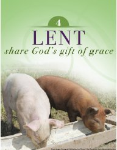
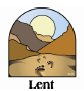

|
|
|
|
||||||||||||||||||||||||||||
|
|
Welcome to Holy Spirit Parish Penfield-Webster, where
life in the spirit is worth living. We endeavor to bring God to our people
through the celebration of the sacraments, solemn adoration, devotions
and ongoing faith formation. In addition, we strongly support devotion
to Our Blessed Mother and the saints who in turn bring us to God. The
parish also endeavors to bring people to God by providing opportunities
for spiritual growth and encouraging active participation in the sacramental
and devotional life of the church. We are a tradition-oriented parish,
bringing our treasured faith and customs to the next generation of believers.
If you are looking for a parish, give us a try and join those others who
have found a home here.
Dear Parishioners,
Looking
Next week 3/14/2010, our parish will take up The Catholic Relief Services Collection. This Collection helps to fund six Catholic organizations that improve the quality of life and protect human dignity. Your gift will support agricultural development to strengthen economies and create food sustainability, provide outreach services to survivors of human trafficking, and supply pastoral care and advocacy for immigrants and refugees. By helping the marginalized and impoverished, you give hope to Jesus in disguise. Please be charitable in next week‘s Catholic Relief Services Collection. Parish Internal Links
Haiti
Earthquake Relief
May
the Irish hills caress you. . |

Special Prayer Times Offered During Lent Fasting during Lent In the fifth century, St. Peter Chrysologus wrote: "Fasting is the soul of prayer, mercy is the lifeblood of fasting. So if you pray, fast; if you fast, show mercy; if you want your petition to be heard, hear the petition of others. If you do not close your ear to others, you open God's ear to yourself." We take the initiative during Lent to curb our desires and exercise an opportunity to put aside what we may want so that we can be reminded of God. Every time we desire that from which we are fasting, we are reminded of why we chose to give it up: to think about God. And, when we give something up, we have more to give away, to help a brother or sister in need because we are not using something for ourselves. Our Lenten fast is intimately connected to our Lenten sharing.
A Testimony on Divine Mercy
|
||||||||||||||||||||||||||
|
|